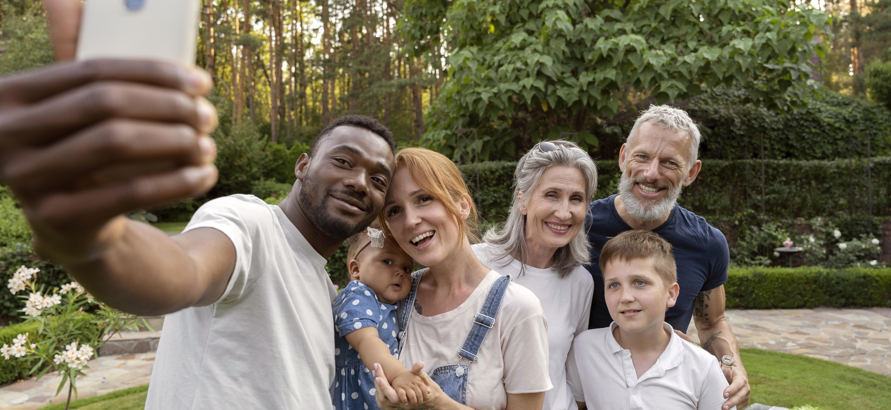

Escola>
Espaço de aprendizado, diálogo e formação de valores.>
Educação, prevenção e segurança para transformar vidas.>
O projeto BASTA! foi desenvolvido para atender às exigências legais e promover a educação socioemocional de estudantes, famílias e educadores, com foco na prevenção da violência contra a mulher e na construção de uma sociedade mais segura e respeitosa.>
O projeto BASTA! tem como objetivo formar uma geração mais consciente, empática e segura, contribuindo para a redução da violência contra a mulher e para a construção de relações mais saudáveis na escola, na família e na sociedade.>
a violência>
habilidades socioemocionais>
o respeito e a igualdade>
redes de segurança>
Uma metodologia que integra conhecimentos teóricos, experiências práticas e uma abordagem socioemocional, alinhada à BNCC e às legislações vigentes. Os conteúdos são adaptados para cada etapa de ensino, com linguagem acessível, atividades interativas e foco na realidade dos estudantes.>
Uma abordagem integrada que envolve escola, família e comunidade para um impacto real e duradouro.>
Espaço de aprendizado, diálogo e formação de valores.>
Parceria fundamental na educação e no fortalecimento dos vínculos.>

Rede de apoio para ampliar o alcance e a sustentabilidade das ações.>
O projeto BASTA! é implementado de forma simples e estruturada, com o apoio de materiais completos, capacitação e acompanhamento contínuo. Conheça as etapas:>
Capacitação de educadores, equipes gestoras e profissionais de rede de apoio.>
Disponibilização de livros, atividades, vídeos e o aplicativo com conteúdos completos.>
Implementação em sala de aula e em ações com famílias e comunidade.>
Suporte contínuo, avaliação de resultados e compartilhamento de boas práticas.>
Acompanhe como o Projeto BASTA! vem ganhando espaço na mídia.>
Solicite uma apresentação e conheça todas as possibilidades de implantação na sua rede de ensino.>
Solicite uma apresentação>